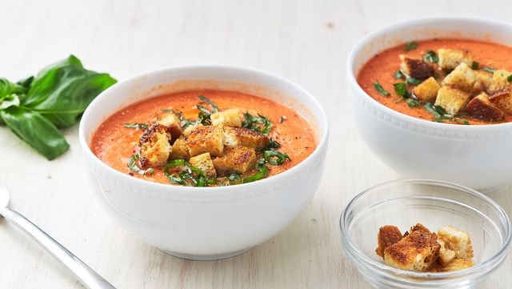

Gazpacho

Description
Make The Most Of Summer Produce With This Easy Gazpacho by Delish US The
sad truth is that, for most of the year at least, tomatoes are terrible.
When it's not tomato season, they can be bland, mealy, and all-around
disappointing. But when late summer rolls around and the tomatoes turn
juicy and sweet, we can't get enough of them. When we're not busy scarfing
them down in caprese salad form, we love them in this classic summer soup.
Our version not only has tomato, it also uses red bell pepper and
cucumbers to really up that summer cornucopia flavor. Since tomatoes have
varying amounts of sweetness and acidity, feel free to adjust the vinegar
amount to taste. If you like it a bit more tart, slip in a teaspoon at a
time until it tastes right to you.
Ingredients
- 2 lb. tomatoes, quartered
- 2 Persian cucumbers, peeled and chopped
- 1/2 red bell pepper, chopped
- 1 clove garlic, roughly chopped
- 2 tbsp. red wine vinegar or sherry vinegar
- 1/2 c. water
- 1/3 c. extra-virgin olive oil, plus more for pan and garnish
- Kosher salt
- Freshly ground black pepper
- 2 slices country bread, cubed
- 2 tbsp. thinly sliced basil
Steps
-
Combine tomatoes, cucumbers, pepper, garlic, vinegar, and water in the
bowl of a food processor or blender. Blend until smooth, then add oil
and blend to combine. Taste and season with salt, pepper, and more
vinegar if needed. Cover and refrigerate until chilled.
-
Meanwhile, in a large skillet over medium heat, add enough oil to coat
the bottom of the pan. Add bread and cook, stirring occasionally, until
golden and crisp. Remove from heat, season with salt, and let cool.
-
To serve, divide soup among bowls and top with basil, croutons, and a
drizzle of oil.